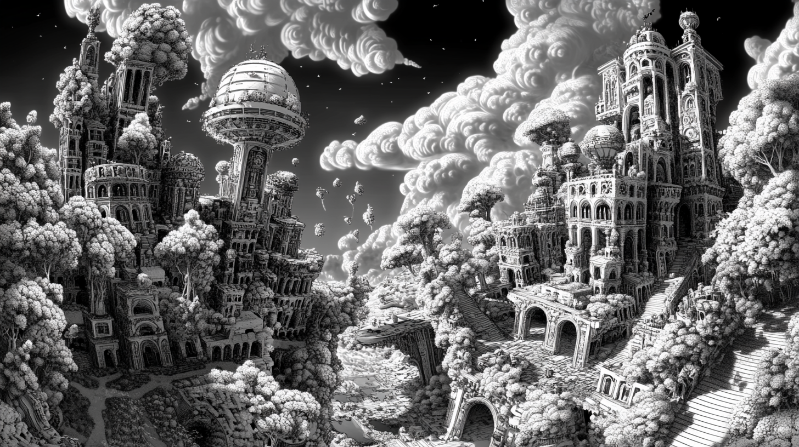
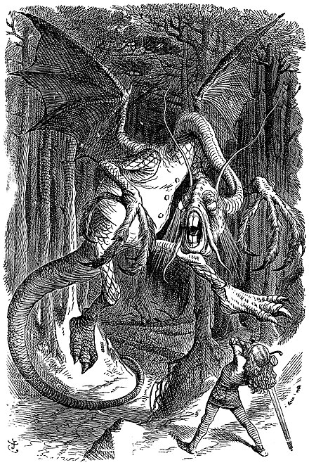
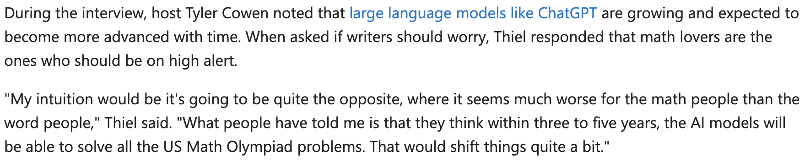

MidJourney: |
| 17th / 18th Centuries — Dawn of Modernity | 19th / early 20th — Modernity Proper | mid 20th – early 21st — Post/Late Modernity |
|---|---|---|
| Renaissance -> Enlightenment | England as the Factory of the World: High precision mass mechanization | Politics and economics: false “sciences” (2 world wars, Great Depression) |
| Rationality | The Horror of the machine - Romanticism, Frankenstein, the rise of the Gothic genre | Paradox: Computation arises out of negative mathematics, 1930s (Godel, Church, Turing): what computation cannot do |
| Mathematics (Descartes, Leibniz, Newton) | 1820s - Luddism, English Socialism | First computers in 2nd world war: differencing engines (Leibniz, Babbage – ChatGPT) - do calculus sums for missile trajectories (gravity, acceleration) |
| Science (Bacon, Newton) | 1830s/40s - Babbage, Lovelace, Engels, Marx (Marx cited Babbage - Marxism is partly a response to technology, and the “General Intellect” also looks like AI) | Post-war 1950s: AI, but also cybernetics, information theory (Shannon), the Turing test, game theory (Nash, von Neumann) - back to “calculemus”? |
| Philosophy (Descartes, Spinoza, Leibniz) | Comte: Positivist sociology (society can be scientific) | Markets as perfect computers: neoliberalism as epistemology. |
| The Birth of the (political) Subject (Luther, Calvin > Descartes, Rousseau) | Darwin: Man is not the centre of things… (but evolution leads an orientation towards history - perfectable or degenerative) | Post-fordism, immaterial / flexibilized / cognitive labor, |
| “Calculemus!” (Let us Calculate - Leibniz) - but see Nietzche’s reaction… | Ricouer: “Hermeneutics of Suspicion” (Marx, Nietzsche, Freud) - beyond Descartes: forces of ideology / will to power / unconscious desire… | Counter-narratives: Cultural Marxism, existentialism, poststructuralism, “ends” talk (End of Man - Foucault; end of History - Fukuyama; end of the grand narrative - Lyotard) |
| Proto-Industrialization / Globalization / Colonization | Fordism / Taylorism | Post-Enlightenment disenchantment |
| Machines: Steam Engine / Jacquard Loom. | AI Winter / Spring / glorious Summer? Transhumanism, return to Enlightenment, or enshittification (Doctorow)? |
| What fundamentals makes for AI / Machine Learning /
Deep Learning / Neural network? Trigonometry (Ancient Egypt, Babylon, India, Greece) Calculus (17th century – Leibniz, Newton) Probability [think “stochastic parrots”] (18th/19th century – Euler, Gauss, Laplanche, Fourier) Linear algebra (19th century – James John Sylvester) Markov Models (very early 20th century – Andrej Markov) |
| All the mathematics for AI in 2025 was developed by
the end of the 19th century (with applications, like Markov models, in
1906/1913) Are the last 125 years just hardware, networks & data (see LeCun 2021 - who doesn’t (quite) say this)? Is our sense of modernity just the long shadow cast by the Enlightenment (17th / 18th century)? |
| Going to: Build a human analog “graphics processing unit” Create a Language Model, DeepPeer – a competitor to DeepSeek, but built by peers Write some award-winning poetry Move from 1913 (Markov model) to 2013 (Word2vec - Mikolov et al.) and 2017 (Transformers - Vaswani et al.) Develop some intuitions about language generation and stochastic parrots |
 |
| Go to
https://docs.google.com/spreadsheets/d/1RUgrHCiRAuCLTjWTXWqzqM87isRvAzEP1b5roPcbgJQ/edit?gid=2005356127#gid=2005356127 Find the spreadsheet with your name on it Change the line: “Deep into that darkness peering,” (line 1, Poe’s The Raven) with just one line of any poem (or song) of your choosing For each pair of letters: Find the row with the first letter (only lower case) And the column with the second letter If no number exists, enter “1” If a number exists, add 1 to it For example: “D” and “e” (from “Deep…”) - find row “d” and column “e” (cell F5), and enter a 1. Then move to “e” and “e”, “e” and “p”, “p” and “ “ , “ “ and “i” Ignore numbers, other punctuations (but not spaces, commas, periods, exclamation and question marks) |
| What kind of poetry have we created with DeepPeer? How could the poetry be improved? (and can even it be improved?) |
| What would happen if we chose more than one letter
(n-gram)? What if instead of a few lines of poetry, we used the whole Internet? What about if we chose words (or parts of words - morphemes or byte pairs)? What if we could also learn semantic relationships – not just contiguity? (word2vec - Mikolov et al 2013) What if the position of words also mattered? What if we could look ahead as well as behind? (Transformers - Vaswani et al 2017) What if we could indicate that some answers are useless, false or harmful? (Ouyang et al, 2022) What if the model could somehow evaluate itself? (Reinforcement Learning) |
| Word2vec - vector embeddings Vector: a list of numbers (usually floating point, i.e. decimal), substituted for a word (or token) In the language modelling word, usually initialized randomly E.g. “cat” -> [0.1, 0.6123, 0.8, 0.312]. “Chat” = [0.8, 0.2, 0.8, 0.12] Why? By using a series of numbers, instead of just one, or the word itself, training can track multiple dimensions of word use – semantics, grammar, sound etc. Word2vec demonstrated how this could work: “King” is to “Queen” as “man” is to “woman” Post-training: Words exist in a multidimensional space - as long as the vector itself The direction of a single token vector (e.g. “cat”) can be compared to other vectors, using cosine similarity (dust off trigonometry, and thank the ancient Egyptians, Babylonians, Indians and Greeks) |
| Transformers – “Attention is All You Need” (and the rise of the
declarative sentence paper title) No easy intuitions (always contain more than meets the eye)! But we can say: Positions are added to embeddings Words “attend” to other words - the first word can be related to the last in a sentence for example - not reliant upon words immediately following or preceding Scale - from 100s of dimensions (word2vec) to 10s of thousands / trillions Output: a probability distribution of next tokens Attention mechanism = parallelizable (just like DeepPeer…) GPUs instead of humans And you might also see some future problems with bias, hallucination, repetition, plagiarization – stochastic parrots (future weeks) Researchers at start-up OpenAI (not Google) saw potential; developed GPT-1, GPT-2, GPT-3 |
| We might say: it’s no accident Markov uses Pushkin’s poetry as his
example… Big movements across late 19th / early 20th century in poetic experimentation: French symbolism (Charles Baudelaire, Arthur Rimbaud, Stéphane Mallarmé – with Edgar Allen Poe as a surprise influence in the background). Language as material, plastic – an object in its own right. Concrete poetry – poems focussed on visual form (see Mallarmé’s Un Coup de Dés Jamais N’Abolira Le Hasard in particular) – obsessions with chance, randomness, contingency Nonsense poetry (Edward Lear, Lewis Carroll) – onomatopoeia, sound/sense The Unconscious Speaks! Automatic writing, free association (influenced by Freud). See particularly the operations of condensation and displacement – (later: metaphor and metonymy). Ideas of similarity and contiguity – not necessarily of logical relations – between symbols & signs: precursors to AI Futurism (Marinetti), Modernism (Pound, Eliot, Joyce), Surrealism (Andre Breton et al.) Russian / Soviet experimentation: Bakhtin, Eisenstein, Bugakov etc 1920: Rossum’s Universal Robots: Karel Čapek, Czech sci fi |
| Rimbaud, A. (1883 [1871]). Un coup de dés
jamais n’abolira le hasard. |


| Mallarmé, S. (1914 [1897]). Un coup de dés
jamais n’abolira le hasard. |

| The Jabberwock, as illustrated by John Tenniel, 1871 |
  |